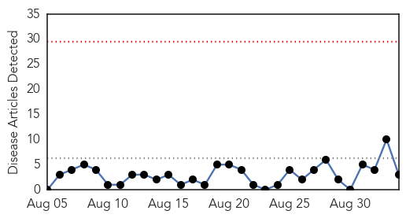
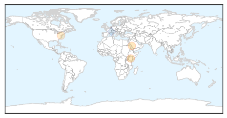

Hepatitis
30-Day Web Trend
0 alerts, 0 warnings

30-Day Twitter Trend
1 alerts, 0 warnings
Article Locations
Article Confidences
Top Articles:
Top Tweets:
- 0.662
- There is no vaccine for hepatitis C, therefore prevention of infection depends upon reducing the risk of exposure to the virus
Dengue Fever
30-Day Web Trend
0 alerts, 0 warnings

30-Day Twitter Trend
3 alerts, 0 warnings

Article Locations

Article Confidences

Top Articles:
- 0.997
- Yemen: Dengue Outbreak - Jun 2015
- 0.990
- Rise in dengue cases set alarm bells ringing
- 0.974
- Leptospirosis concern
- 0.837
- Cabinet to use reserve fund to aid Tainan's dengue fever battle
- 0.769
- North MCD short of staff to fight dengue
- 0.675
- Adviser for steps to eradicate dengue
- 0.669
- ‘Vector-borne diseases linked to climate change’
- 0.658
- Cabinet green lights reserve fund request to fight dengue fever
Top Tweets:
-
No tweets found for Sep 03, 2015